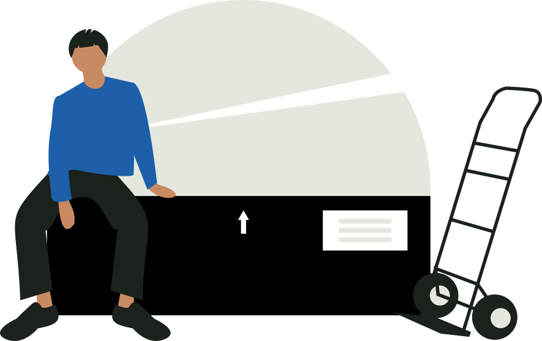

作业 · 逆向物流
退货管理
退货登记、质检判定与处置：再上架、维修或报废，全程留痕。
待处理退货
18单
待质检 11 · 待上架 7最久等待 2 天
今日退货
26单
+4 单共 84 件
退货率
1.8%
-0.2%行业均值 2.4%
可再上架率
72%
维修 18% · 报废 10%
退货单
今日共 8 条记录| 退货单 | 客户 | 商品 | 数量 | 原因 | 状态 | 申请时间 |
|---|
退货入库后默认进入 E 区退货暂存
退货原因
近 30 天 · 按单量占比七天无理由42%
质量问题26%
发错货14%
包装破损11%
其他7%
“七天无理由”占比最高，建议把退货暂存区靠近质检台，减少二次搬运。
处置结构
近 30 天质检结论可再上架72%
返修18%
报废10%

点击“质检”打开处置抽屉；判定结果会回写退货单状态与库存。